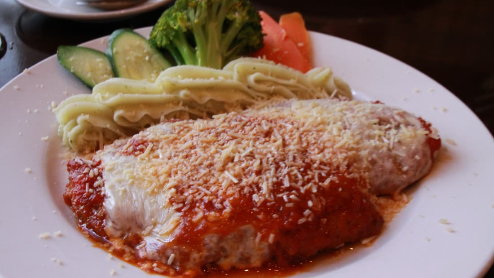

An all around lovely and clean-cut website for all of your recipe desires. Find collections based on
meals, in addition
to snack beverages and more. You can subscribe to a monthly newsletter as well to have recipes delivered
to your inbox.
And we provide to best quality food for you.
Twice-baked potatoes,
Buffalo chicken potato skins are tasty appetizers,
Baked orange chicken recipe,
Corn dogs, either homemade or store-bought,
Stuffed green peppers,
Easy Meatball recipes and rice,
Homemade pizza can be fun for the whole family,
French bread pizza,
Baked chicken has a million different options,
Stuffed zucchini boatsTwice-baked potatoes,
Buffalo chicken potato skins are tasty appetizers,
Baked orange chicken recipe etc.

Chicken parm
Australian pubs have made this Italian dish their own
the combination of melted Parmesan and tomato on chicken fillet is irresistible.
Donuts
These all-American fried wheels of dough need no introduction, but we will say one thing:
the delicious guilt of snacking on these addictive calorie bombs makes them taste even better. If that's possible.
Piri-piri chicken
The South African restaurant chain Nando's has made Mozambican-Portuguese piri-piri chicken loved around the world. Galinha à Zambeziana is a finger-lickin'
feast of chicken cooked with lime, pepper, garlic, coconut milk and piri piri sauce.